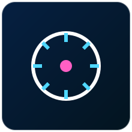

Sensores que monitoram grandezas elétricas (corrente e tensão) e mecânicas (vibração, rotação e posição angular) de máquinas e motores.
Nenhum sensor encontrado com esse filtro.
O ACS712 é um sensor de efeito Hall que mede corrente elétrica (contínua ou alternada) sem a necessidade de interromper o circuito com um resistor shunt.
A corrente a ser medida passa por uma trilha condutora interna ao chip, gerando um campo magnético proporcional. Um elemento de efeito Hall integrado detecta esse campo e converte a intensidade da corrente em uma tensão de saída analógica linear e proporcional.
| Tensão de alimentação | 5V |
|---|---|
| Faixas disponíveis | ±5A, ±20A ou ±30A, dependendo do modelo |
| Sensibilidade | 185, 100 ou 66 mV/A, conforme a faixa |
| Isolamento | Isolamento galvânico entre o circuito de potência e o de medição |
Analógico
Instalado em série com o motor de uma esteira, o ACS712 permite que um Arduino monitore a corrente em tempo real e desligue o motor automaticamente em caso de sobrecarga, protegendo o equipamento.
Allegro MicroSystems (fabricante original do CI), Módulos: diversos fabricantes de placas breakout compatíveis
O ZMPT101B é um módulo baseado em transformador de precisão usado para medir tensão alternada (CA), muito utilizado em projetos de monitoramento de energia elétrica.
Um pequeno transformador de tensão reduz e isola galvanicamente a tensão da rede elétrica para um nível seguro, compatível com a entrada analógica do microcontrolador. O sinal resultante, ainda alternado, é processado no código para calcular o valor RMS da tensão de entrada.
| Tensão de entrada | Até 250V CA (rede monofásica) |
|---|---|
| Alimentação do módulo | 5V |
| Isolamento | Galvânico, via transformador |
| Saída | Sinal analógico alternado, proporcional à tensão de entrada |
Analógico
Combinado com o ACS712 em um mesmo projeto, o ZMPT101B permite calcular a potência elétrica real consumida por uma máquina (tensão x corrente), formando um medidor de energia simples baseado em Arduino.
Fabricante genérico do módulo (design amplamente replicado), Distribuído por diversos fabricantes de placas de desenvolvimento
O SW-420 é um sensor digital de vibração que detecta movimentos, impactos ou trepidações em uma superfície ou equipamento.
Utiliza uma mola metálica dentro de um tubo condutor: em repouso, a mola mantém contato elétrico constante; quando ocorre vibração, o contato é interrompido momentaneamente, gerando pulsos que são detectados pelo circuito comparador do módulo.
| Tensão de alimentação | 3,3V a 5V |
|---|---|
| Sensibilidade | Ajustável por potenciômetro |
| Saída | Digital (nível alto/baixo conforme vibração detectada) |
| Tempo de resposta | Rápido, adequado para detecção de impactos |
Digital
Fixado na carcaça de um motor industrial, o SW-420 permite que um ESP32 detecte vibração excessiva e envie um alerta MQTT indicando possível desbalanceamento ou falha mecânica iminente.
Fabricante genérico amplamente replicado, Distribuído por HiLetgo, Elegoo, Keyestudio
O A3144 é um sensor de efeito Hall digital usado para detectar a presença de campo magnético, muito empregado para medir a velocidade de rotação de motores e rodas.
Quando um ímã se aproxima da face sensível do componente, o efeito Hall gera uma variação de tensão detectada internamente, que o circuito converte em uma saída digital (nível baixo na presença do ímã). Posicionando um ímã em um eixo giratório, cada volta gera um pulso.
| Tensão de alimentação | 4,5V a 24V |
|---|---|
| Tipo de saída | Digital, coletor aberto (open-drain) |
| Resposta | Rápida, adequada para contagem de rotações em alta velocidade |
| Uso típico | Tacômetros e encoders simples de 1 pulso por volta |
Digital
Com um ímã fixado no eixo de um motor e o A3144 posicionado próximo, o Arduino conta os pulsos por segundo e calcula a rotação em RPM, exibindo o valor em um display industrial.
Allegro MicroSystems (fabricante original do CI), Módulos breakout: diversos fabricantes compatíveis

O KY-040 é um módulo de encoder rotativo incremental com botão de pressão integrado, usado para detectar tanto o sentido quanto a quantidade de rotação de um eixo manual.
Possui dois contatos internos (canais A e B) defasados entre si. Ao girar o eixo, esses contatos geram pulsos em uma sequência específica; a ordem em que os pulsos ocorrem (A antes de B, ou vice-versa) indica o sentido de rotação, enquanto a contagem de pulsos indica a quantidade de 'cliques' girados.
| Tensão de alimentação | 3,3V a 5V |
|---|---|
| Resolução | 20 pulsos por volta, tipicamente |
| Saída | Dois canais digitais (A e B) + botão de pressão (push) |
| Aplicação | Entrada de controle manual com indicação de sentido |
Digital (quadratura A/B)
Em um painel de ajuste de velocidade de um motor, o KY-040 permite que o operador gire o botão para aumentar ou diminuir o valor de referência (setpoint) exibido em um display, com o botão de pressão confirmando a seleção.
Fabricante genérico amplamente replicado, Distribuído por HiLetgo, Elegoo, Keyestudio